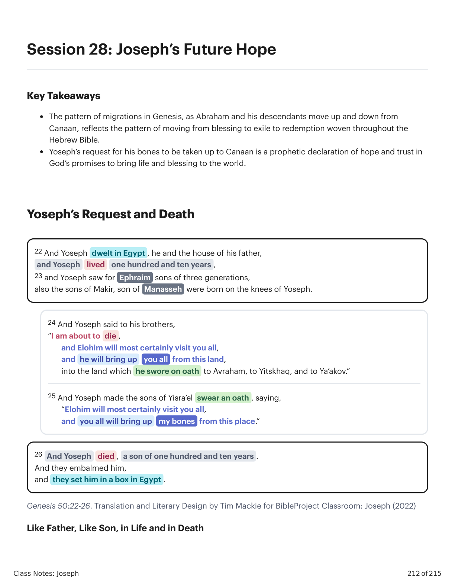
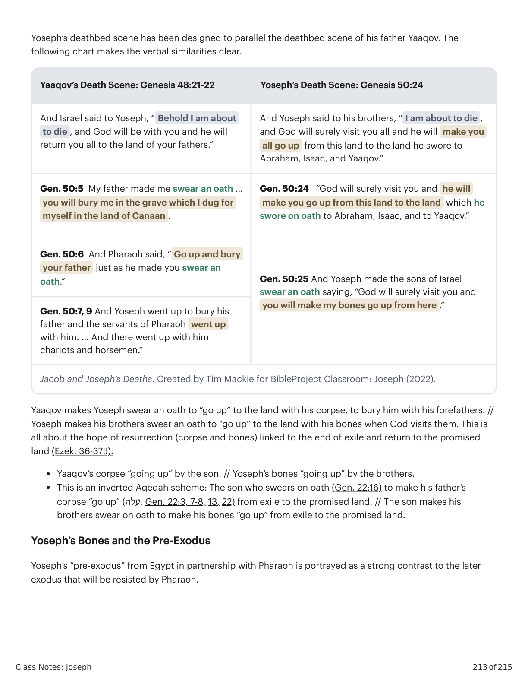
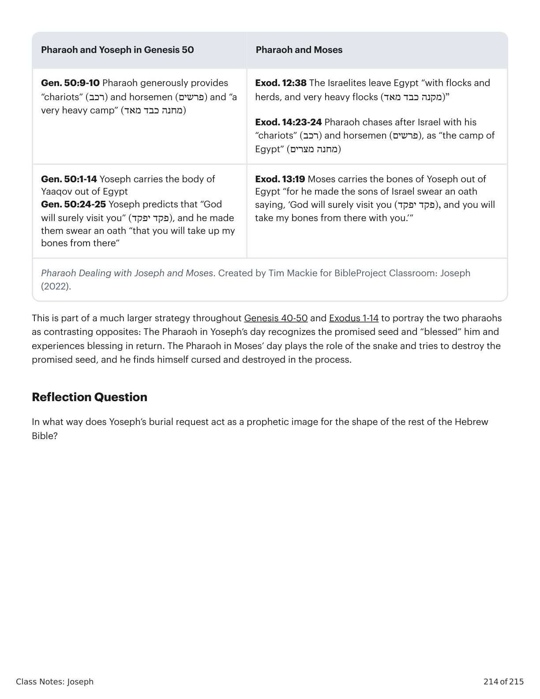

A Esperança Futura de JoséJoseph’s Future Hope
Class Notes: Joseph
212 of 215
Session 28: Joseph’s Future Hope
Key Takeaways
The pattern of migrations in Genesis, as Abraham and his descendants move up and down from
Canaan, reflects the pattern of moving from blessing to exile to redemption woven throughout the
Hebrew Bible.
Yoseph’s request for his bones to be taken up to Canaan is a prophetic declaration of hope and trust in
God’s promises to bring life and blessing to the world.
Yoseph’s Request and Death
Genesis 50:22-26. Translation and Literary Design by Tim Mackie for BibleProject Classroom: Joseph (2022)
Like Father, Like Son, in Life and in Death
22 And Yoseph dwelt in Egypt , he and the house of his father,
and Yoseph
lived
one hundred and ten years ,
23 and Yoseph saw for Ephraim sons of three generations,
also the sons of Makir, son of Manasseh were born on the knees of Yoseph.
24 And Yoseph said to his brothers,
“I am about to die ,
and Elohim will most certainly visit you all,
and he will bring up
you all from this land,
into the land which he swore on oath to Avraham, to Yitskhaq, and to Ya’akov.”
25 And Yoseph made the sons of Yisra’el swear an oath , saying,
“Elohim will most certainly visit you all,
and you all will bring up
my bones from this place.”
26 And Yoseph
died , a son of one hundred and ten years .
And they embalmed him,
and they set him in a box in Egypt .

Gênesis X:Y. Tradução e Design Literário por Tim Mackie para BibleProject Classroom: José (2021).Genesis X:Y. Translation and Literary Design by Tim Mackie for BibleProject Classroom: Joseph (2021).
Class Notes: Joseph
213 of 215
Yoseph’s deathbed scene has been designed to parallel the deathbed scene of his father Yaaqov. The
following chart makes the verbal similarities clear.
Yaaqov’s Death Scene: Genesis 48:21-22
Yoseph’s Death Scene: Genesis 50:24
And Israel said to Yoseph, “ Behold I am about
to die , and God will be with you and he will
return you all to the land of your fathers.”
And Yoseph said to his brothers, “ I am about to die ,
and God will surely visit you all and he will make you
all go up from this land to the land he swore to
Abraham, Isaac, and Yaaqov.”
Gen. 50:5 My father made me swear an oath …
you will bury me in the grave which I dug for
myself in the land of Canaan .
Gen. 50:6 And Pharaoh said, “ Go up and bury
your father just as he made you swear an
oath.”
Gen. 50:24 “God will surely visit you and he will
make you go up from this land to the land which he
swore on oath to Abraham, Isaac, and to Yaaqov.”
Gen. 50:25 And Yoseph made the sons of Israel
swear an oath saying, “God will surely visit you and
you will make my bones go up from here .”
Gen. 50:7, 9 And Yoseph went up to bury his
father and the servants of Pharaoh went up
with him. … And there went up with him
chariots and horsemen.”
Jacob and Joseph’s Deaths. Created by Tim Mackie for BibleProject Classroom: Joseph (2022).
Yaaqov makes Yoseph swear an oath to “go up” to the land with his corpse, to bury him with his forefathers. //
Yoseph makes his brothers swear an oath to “go up” to the land with his bones when God visits them. This is
all about the hope of resurrection (corpse and bones) linked to the end of exile and return to the promised
land (Ezek. 36-37!!).
Yaaqov’s corpse “going up” by the son. // Yoseph’s bones “going up” by the brothers.
This is an inverted Aqedah scheme: The son who swears on oath (Gen. 22:16) to make his father’s
corpse “go up” (עלה, Gen. 22:3, 7-8, 13, 22) from exile to the promised land. // The son makes his
brothers swear on oath to make his bones “go up” from exile to the promised land.
Yoseph’s Bones and the Pre-Exodus
Yoseph’s “pre-exodus” from Egypt in partnership with Pharaoh is portrayed as a strong contrast to the later
exodus that will be resisted by Pharaoh.

Gênesis X:Y. Tradução e Design Literário por Tim Mackie para BibleProject Classroom: José (2021).Genesis X:Y. Translation and Literary Design by Tim Mackie for BibleProject Classroom: Joseph (2021).
Class Notes: Joseph
214 of 215
Pharaoh and Yoseph in Genesis 50
Pharaoh and Moses
Gen. 50:9-10 Pharaoh generously provides
“chariots” )(רכב and horsemen )(פרשים and “a
very heavy camp” )(מחנה כבד מאד
Exod. 12:38 The Israelites leave Egypt “with flocks and
herds, and very heavy flocks )”(מקנה כבד מאד
Exod. 14:23-24 Pharaoh chases after Israel with his
“chariots” )(רכב and horsemen )(פרשים, as “the camp of
Egypt” )(מחנה מצרים
Gen. 50:1-14 Yoseph carries the body of
Yaaqov out of Egypt
Gen. 50:24-25 Yoseph predicts that “God
will surely visit you” )(פקד יפקד, and he made
them swear an oath “that you will take up my
bones from there”
Exod. 13:19 Moses carries the bones of Yoseph out of
Egypt “for he made the sons of Israel swear an oath
saying, ‘God will surely visit you ),(פקד יפקד and you will
take my bones from there with you.’”
Pharaoh Dealing with Joseph and Moses. Created by Tim Mackie for BibleProject Classroom: Joseph
(2022).
This is part of a much larger strategy throughout Genesis 40-50 and Exodus 1-14 to portray the two pharaohs
as contrasting opposites: The Pharaoh in Yoseph’s day recognizes the promised seed and “blessed” him and
experiences blessing in return. The Pharaoh in Moses’ day plays the role of the snake and tries to destroy the
promised seed, and he finds himself cursed and destroyed in the process.
Reflection Question
In what way does Yoseph’s burial request act as a prophetic image for the shape of the rest of the Hebrew
Bible?

Gênesis X:Y. Tradução e Design Literário por Tim Mackie para BibleProject Classroom: José (2021).Genesis X:Y. Translation and Literary Design by Tim Mackie for BibleProject Classroom: Joseph (2021).
Class Notes: Joseph
215 of 215
Session 29: Reflecting on the Joseph Story
Key Takeaways
Every detail of the biblical text is thoughtfully crafted and divinely inspired. Taking time to consider why
a certain story or narrative element has been included can reveal deep meaning and connection to the
big picture of the whole Bible’s message.
The story of Yoseph illustrates how God is at work, often behind the scenes, to work tov (“good”) in the
world he created.
The Bible is beautiful, artistic literature, but even more so, it points to the ultimate source of beauty.
This session has no notes
Reflection Question
Take some time to reflect on the insights you learned in this class.